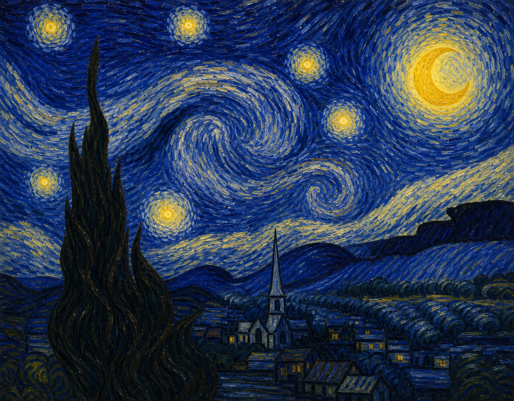
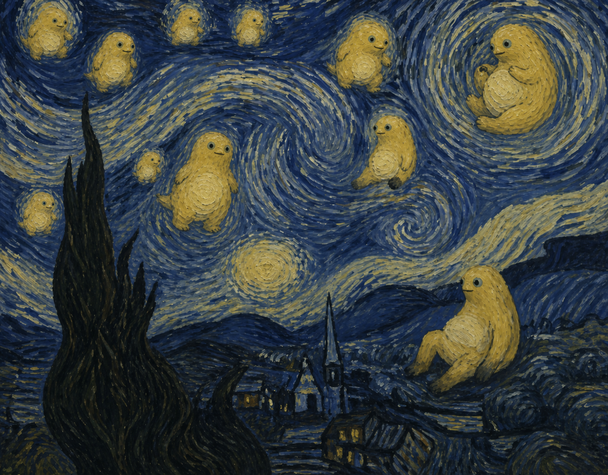
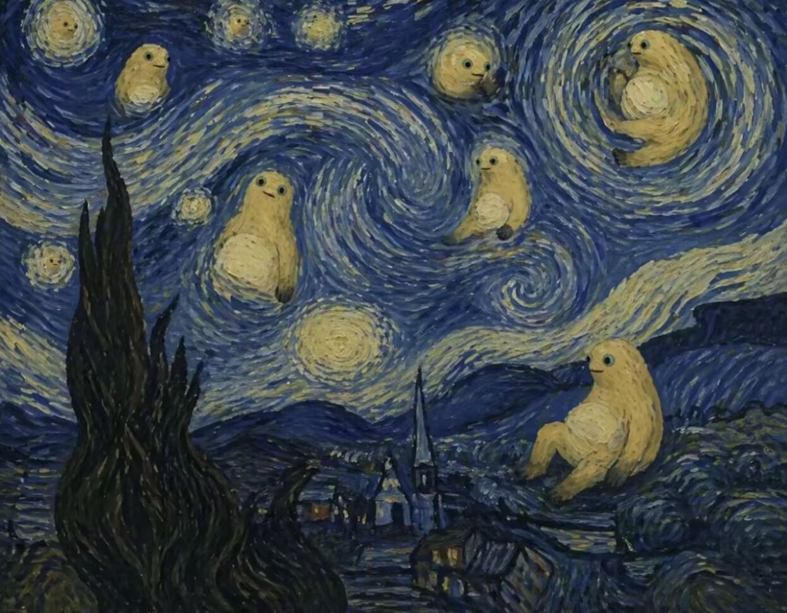

A
星空：天体替换
月亮与主要星体变成不同姿态的奶龙。柏树、村庄、山丘和天空旋涡继续承担原构图。
NON-OFFICIAL · IMAGE TRANSFORMATION SKILL
不是给图片刷一层黄色，也不是随手塞满角色。先找到画面的主角、视觉锚点和笑点，再让奶龙继承它们的位置、姿态与画风。

识别语义
建立映射
锁定构图
继承画风
01 / BEFORE & AFTER
拖动分界线查看变化。背景、镜头和空间关系应当继续工作；真正改变的是原来承担视觉焦点的对象。


月亮与主要星体变成不同姿态的奶龙。柏树、村庄、山丘和天空旋涡继续承担原构图。
02 / CLASSIC WORKS
03 / EASTERN COLLISIONS
角色不必永远保持亮黄色。只要体型、五官和动作仍可辨认，它可以继承水墨、矿物色、飞白与壁画裂纹。
04 / GLOBAL FILTER
高强度过滤会让按钮躺下、侧栏蜷曲、卡片探头；分型拟合则用同画风的大、中、小奶龙共同补齐不规则轮廓，而不是把其他作品的缩略图塞进来。
C2-S2-R1-P5-M1功能与无障碍始终锁定MULTISCALE SHAPE FITTING
组件出现头、肚皮、尾巴和姿态，不止是换色。
多只同画风奶龙共同补轮廓、凹角和窄缝。
视线、朝向与动作形成跟随、环抱或排队。
STRUCTURE STUDIES · NON-OFFICIAL
下面只研究公开页面的结构特征，不复制品牌视觉：小红书的瀑布流适合多尺度群落，B站的视频网格适合横卧播放器，淘宝的搜索与类目适合长条和蜷曲形态。
卡片不再是统一矩形：大奶龙承担主笔记，中奶龙补列间落差，小奶龙填边角，仍保留瀑布流的扫描节奏。
每张视频卡成为横卧奶龙：肚皮承载画面，头部标记作者，尾巴延伸播放进度；网格和标题仍然清晰。
搜索框由一只伸展奶龙构成，分类入口由小奶龙沿侧边排队；高密度信息继续规整，角色只接管外壳与路径。
05 / THE SKILL
优先识别主角、最大物体、核心道具、月亮、太阳和重复视觉符号。
先判断它是圆团、长路径、地形块、动态主体还是重复阵列，避免套错造型。
让奶龙继承原元素的位置、尺度、朝向、动作、遮挡与画面功能。
文字、背景、构图、透视和未指定元素默认保持，减少模型整图重画。
油画保留笔触，照片匹配光影，像素图保持网格，漫画延续线条与网点。
OPEN SOURCE · CODEX SKILL + UNIVERSAL PROMPT